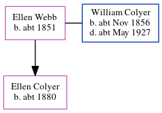

Ellen Maude Colyer c1880 -
[ Home ] | [ Calendar ] | [ Surnames Index ] | [ Errors ] | [ Family History ]A laundress and the child of William Colyer (a bricklayer) and Ellen Webb, Ellen Colyer, the first cousin twice-removed on the mother's side of Nigel Horne, was born in Clapham, London, England c. 1880.
During her life, she was living at Union Street in Clapham on 5 Apr 18913; and at Merton Road, Wandsworth, London, England in 19011 and on 31 Mar 19012.
Parents
- William was born c. Nov 1856
- Ellen was born c. 1851
Citations
- 1901 England, Wales & Scotland Census - Findmypast
- 1901 England, Wales & Scotland Census - Findmypast (was age 21 and the daughter of the head of the household)
- 1891 England, Wales & Scotland Census - Findmypast (was age 11 and the daughter of the head of the household)
Family Tree
Map
Generated by ged2site. Last updated on Jul 3, 2024
Known Issues
Birth date (abt 1880) has no citations